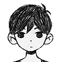
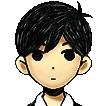
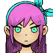
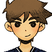

OMORI'S CHARACTERS
Main characters

OMORI is een jonge jongen die een zwarte tanktop, lange zwarte sokken en zwart gestreepte shorts draagt.
Hij is het enige personage dat zwart-wit is gekleurd in tegenstelling tot de kleurrijke bewoners van HEADSPACE, en hij is ook het enige personage met lege ogen zonder pupillen.
Zijn algehele ontwerp komt voort uit het twaalfjarige uiterlijk van Sunny.
Er kan niet veel worden gezegd over OMORI's persoonlijkheid, aangezien hij een stille hoofdrolspeler is.
Er wordt echter gesuggereerd dat hij behoorlijk melancholisch is, omdat zijn vertelling soms sombere ingangen heeft en zijn laatste gevechtsdialoog rechtstreeks naar Sunny gaat.
Zijn capaciteiten weerspiegelen ook deze somberheid, omdat ze ofwel gewelddadig van aard zijn of gewoon SAD krijgen of een voordeel hebben terwijl ze SAD hebben.
Er kan echter worden gespeculeerd dat dit meer een weerspiegeling is van Sunny's emotionele toestand, aangezien OMORI een personage is dat is opgebouwd uit Sunny's geweten in WHITE SPACE en HEADSPACE.

Sunny ziet eruit als een gemiddelde tiener. Hij heeft steil, zwart, oorlang haar, met een pony die zijn ogen een beetje bedekt.
Hij heeft ook gebogen wenkbrauwen en ogen van dezelfde kleur zwart, in tegenstelling tot zijn blekere huid.
In het heden draagt hij een overhemd met witte kraag en een blauw vest erover. Hij draagt een beige korte broek, witte sokken en zwarte schoenen.
Hij lijkt ook iets groter te zijn geworden, maar niet zo veel in vergelijking met zijn vrienden, mogelijk als gevolg van ondervoeding door vier jaar als opsluiting door te brengen.
Sunny werd beschreven als een verlegen maar vriendelijke jongen. Hij speelde viool om samen met zijn zus MARI op recitals te treden.
BASIL beschreef Sunny als een "echt goede luisteraar" en hoewel hij verlegen was, gaf Sunny om zijn vrienden en ze konden goed met elkaar overweg. Sunny zou "een geweldig geheugen" hebben.
Nadat er IETS is gebeurd, verandert hij van verlegen in teruggetrokken en sluit hij zich volledig af van zijn vrienden en de wereld, waardoor hij een aantal jaren een hikikomori wordt.

In HEADSPACE draagt Aubrey een lichtblauwe jurk en een roze strik in haar lange haar.
Net als de andere vier draagt ze geen sokken of schoenen en haar haar en ogen zijn paars/donkerblauw zoals Kel en Hero. Ze heeft ook een blauwe knuffel bij zich die bekend staat als MR. PLANTEGG.
Natuurlijk heeft Aubrey donkerbruin haar en ogen, maar ze heeft haar haar roze geverfd en draagt blauwgroene lenzen.
Ze droeg als kind verschillende soorten outfits, maar had vaak een roze strik in haar haar.
Als oudere tiener wordt ze gezien met een felblauwe zakdoek vastgebonden in een strik, een wit en geel varsity-jasje, een crop-top en minirok, en hanteert ze een spijkerknuppel.
Tijdens haar jeugd is Aubrey erg vrolijk en speelt ze altijd graag met haar vrienden.
Desondanks wordt ze heel gemakkelijk verdrietig en maakt ze zich zorgen, ze is bijvoorbeeld het meest angstig als BASIL vermist wordt.
Vaak is ze onhandig, wat resulteert in geschreeuw van Kel, met wie ze altijd ruzie heeft.
Ze blijkt ook erg emotioneel te zijn op momenten dat er iets ergs gebeurt, maar behoudt nog steeds haar gelukkige, gelukkige houding.
Deze eigenschappen worden gedeeld met haar HEADSPACE-tegenhanger, zij het iets anders met haar puppyliefde-persona tegenover OMORI.
 De HEADSPACE-versie van Kel verschijnt als een jonge jongen met een kleurrijke tanktop bedekt met veelkleurige vierkanten.
Net als de anderen in het gezelschap draagt hij geen sokken of schoenen en zijn haar en ogen zijn paars zoals Aubrey en Hero.
In de echte wereld verschijnt Kel als een oudere tiener. Hij is veel groter geworden dan de meeste van zijn vrienden.
Net als zijn broer Hero heeft Kel bruin haar en een donkere huid. Hij heeft ook een goed gebouwd lichaam omdat hij elke dag constant basketbal speelt.
Zijn hoofdkleding bestaat uit een oranje basketbaluniform met witte strepen dat op een vos lijkt.
De HEADSPACE-versie van Kel verschijnt als een jonge jongen met een kleurrijke tanktop bedekt met veelkleurige vierkanten.
Net als de anderen in het gezelschap draagt hij geen sokken of schoenen en zijn haar en ogen zijn paars zoals Aubrey en Hero.
In de echte wereld verschijnt Kel als een oudere tiener. Hij is veel groter geworden dan de meeste van zijn vrienden.
Net als zijn broer Hero heeft Kel bruin haar en een donkere huid. Hij heeft ook een goed gebouwd lichaam omdat hij elke dag constant basketbal speelt.
Zijn hoofdkleding bestaat uit een oranje basketbaluniform met witte strepen dat op een vos lijkt.
Tijdens zijn jeugd is Kel een beetje brutaal, impulsief en onbeschoft en maakt hij altijd ruzie met zijn vrienden.
Hij is van nature erg competitief, wil altijd wedstrijden of races winnen en is inderdaad erg energiek en snel.
Hij vindt romantiek ook vies en dat meisjes cooties hebben. Maar hoewel hij luidruchtig is en zijn vrienden graag ergert, geeft hij oprecht om hen en beschermt hij hen.
Kel lijkt een sterke band te hebben met zijn broer Hero en kibbelt af en toe met Aubrey over kleine meningsverschillen over kleine onderwerpen.
Hij ziet de stille Sunny zelfs als iemand die geweldig is en het beste in hem gelooft. Deze eigenschappen worden gedeeld met zijn HEADSPACE-tegenhanger.

De HEADSPACE-versie van Hero draagt een blauw gestreepte pyjama. Zijn haar is onverzorgd uit de slaap, zoals te zien is in zijn sprites.
Net als Kel en Aubrey heeft hij geen sokken of schoenen en zijn haar en ogen zijn paars. Volgens Sprout Mole Mike is hij op zijn vijftiende 1.75 meter.
Hero is ook de oudste en langste van het gezelschap. In het heden verschijnt Hero als een jonge volwassen man met een meer volwassen uiterlijk in vergelijking met de anderen.
Hero heeft netjes gestyled bruin haar en zwarte ogen zoals Kel. Zijn hoofdkleding bestaat uit een marineblauwe trui met V-hals, een grijze broek en witte schoenen.
Het is ook opmerkelijk dat hij groter werd zoals de andere hoofdpersonen.
Tijdens zijn jeugd is Hero de vredestichter van de groep, die probeert zijn vrienden in bedwang te houden als ze te opgewonden raken.
Hij wordt beschreven als een milde persoonlijkheid en gepassioneerd in huishoudelijk werk zoals bakken, koken en schoonmaken, wat hem een ideale werknemer maakt.
Hero heeft ook een charismatische kant die hij gebruikt om anderen te charmeren.
Zijn charisma stelt hem in staat anderen te overtuigen om in te stemmen met zijn verzoeken, kortingen te krijgen van Mailbox en bevriend te raken met dieren zoals Ems.
Hij kan echter soms een duwtje in de rug zijn wanneer hij wordt geconfronteerd en heeft moeite om anderen te weigeren.
Hij lijkt ook arachnofobie te hebben (een irrationele angst voor spinnen) tot het punt dat hij volledig bevriest. Deze eigenschappen worden gedeeld met zijn HEADSPACE-tegenhanger.